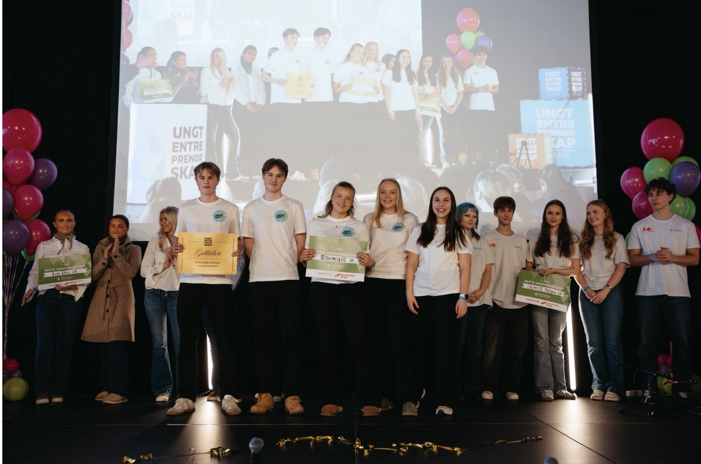
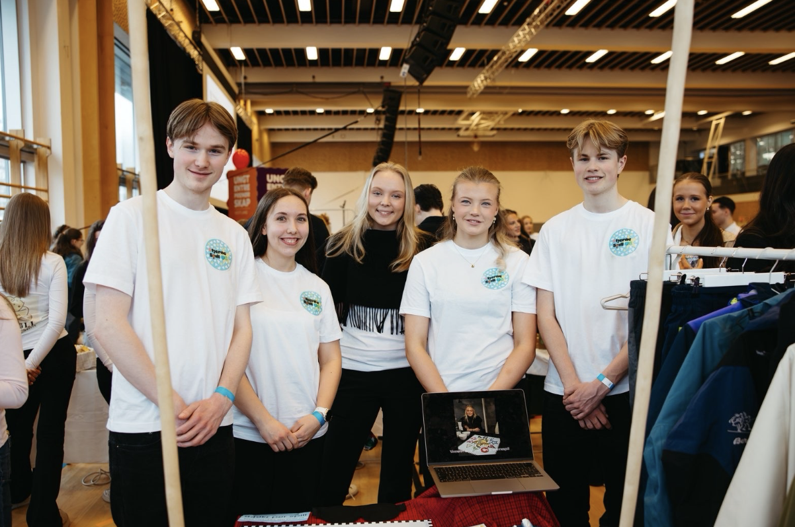

Forestill deg at du skulle ha spilt et helt vanlig brettspill, bare med øynene lukket? Hadde du klart å følge med, ta riktige valg og holde oversikt? Dette er realiteten til en ofte oversett gruppe i samfunnet, nemlig mennesker med synsnedsettelser. En aktivitet som egentlig skal samle familie eller venner, kan føre til at en hel gruppe faller utenfor. Dette ønsker Stjernespill UB å finne en løsning til.
Ungdomsbedriften ved Amalie Skram videregående skole har utviklet et brettspill med mål om å inkludere mennesker med nedsatt syn. Det innovative produktet, kalt Stjernespill, er en kombinasjon av familie-favorittene Ludo og Stigespill.
Bak Stjernespill UB står det et engasjert team som jobber sammen for å skape et mer inkluderende samfunn gjennom innovasjon. Ungdomsbedriften ledes av daglig leder Didrik Bakka Sommersten, med Amanda Træland som økonomiansvarlig, Sanne Hella Stople som kommunikasjonsansvarlig, Ask Heggø Kalleklev som produksjonsansvarlig og Isabella Dønheim Lund som markedsansvarlig. Sammen kombinerer de ulike styrker og ansvarsområder for å utvikle et produkt som kan gjøre en forskjell for mennesker med synsnedsettelser.
Spillet deres er designet med taktile detaljer og tydelige fargekontraster, slik at det skal være mulig for alle å spille, uavhengig av synsevne. Målet er at alle skal kunne delta på lik linje, uten behov for ekstra hjelp. For bedriften handler dette mer enn bare et spill. Det handler om inkludering, mestring og fellesskap.
Den innovative idéen har allerede fått stor oppmerksomhet. Under fylkesmesterskapet for ungdomsbedrifter i Vestland, imponerte Stjernespill UB stort, og tok hjem fire av fem konkurranser de deltok i. Blant prisene var: Innovasjonsprisen, Samfunnsbyggerprisen, Beste samarbeid med næringslivet og Beste ungdomsbedrift.
Seieren sikret dem en plass i NM for ungdomsbedrifter 2026, som arrangeres i Lillestrøm 29. april. Her skal de konkurrere mot landets beste ungdomsbedrifter i flere kategorier: Bærekraftsprisen, Størst verdiskapningspotensial, Beste samarbeid med næringslivet, Innovasjonsprisen og Beste ungdomsbedrift.
For Stjernespill UB handler reisen videre om mer enn konkurranser og priser. Ambisjonen er å bidra til et mer inkluderende samfunn. Ved å skape et produkt som fremhever mestringsfølelse og aksept hos en demografi som ofte kan føle på utenforskap, skaper bedriften en unik verdi hos kunder.

Stjernespill UB på stand under fylkesmesterskapet i Vestland. Fra venstre: Didrik Bakka Sommersten, Sanne Hella Stople, Amanda Træland, Isabella Dønheim Lund og Ask Heggø Kalleklev. Foto: Inger Paulsen
Vil du vite mer?
Besøk stjernespill.no eller følge dem på sosiale medier under navnet Stjernespill UB.
Kontakt oss!
skramavis@gmail.com
SoMe: @skramavis